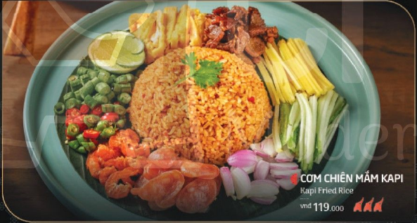

Cơm chiên mắm Kapi

Phục vụ: 1 người · Giá: 119.000 VND
Thành phần chính: cơm nguội, mắm Kapi, tôm/ thịt, trứng, hành, rau thơm, dầu ăn.
Hàm lượng P–L–G (1 phần):
- Protein: 18–22 g
- Lipid: 18–24 g
- Glucid: 75–90 g
Tổng năng lượng: ~620 kcal / phần.
Lưu ý dinh dưỡng:
- Vị đậm, có thể hơi mặn và nhiều dầu — không khuyến nghị cho chế độ low‑fat hoặc low‑salt.
- Chứa hải sản và trứng — lưu ý dị ứng.
- Có thể yêu cầu ít dầu, ít muối hoặc thêm rau để cân bằng.
Gợi ý dùng: ăn kèm rau sống, chanh để giảm cảm giác ngấy.
Quét mã để mở trang món